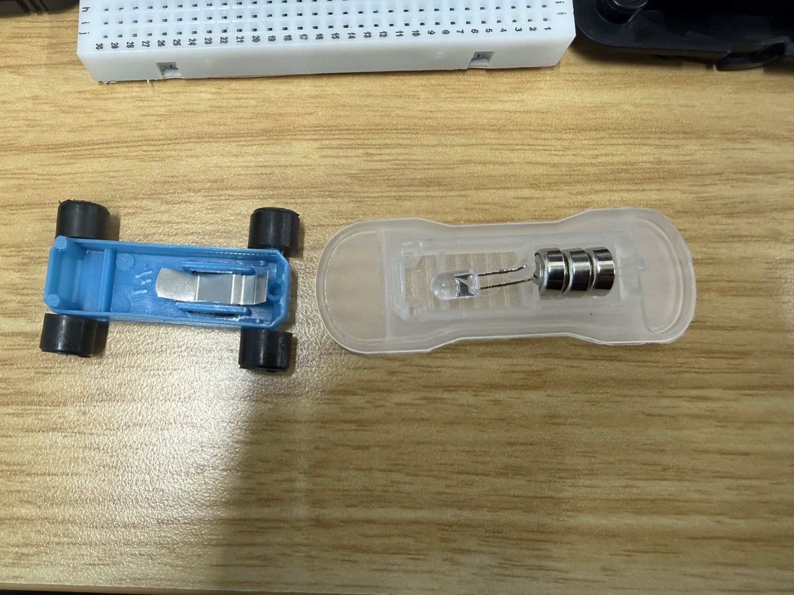
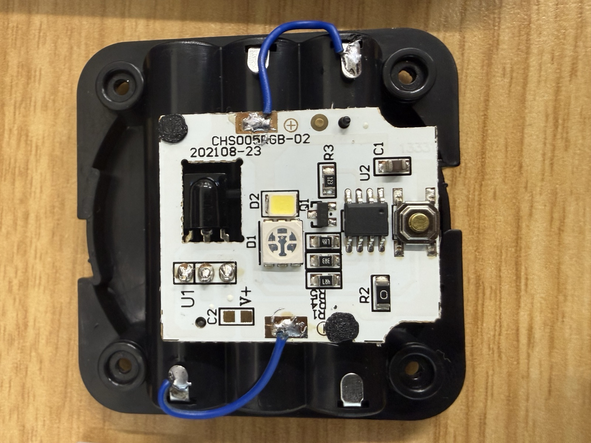
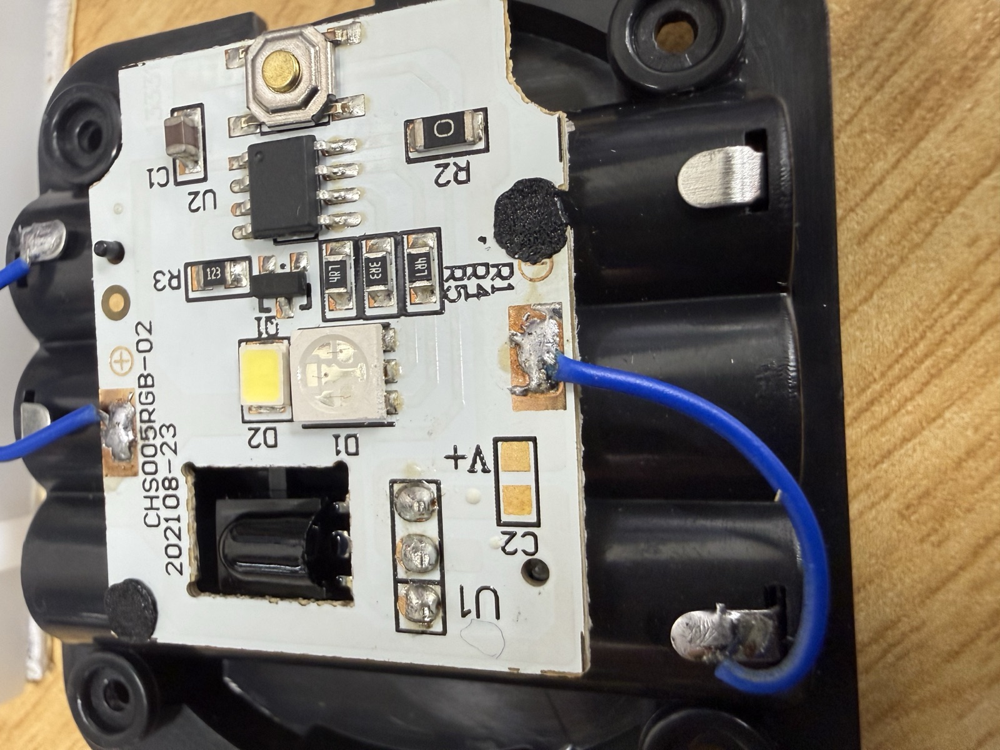
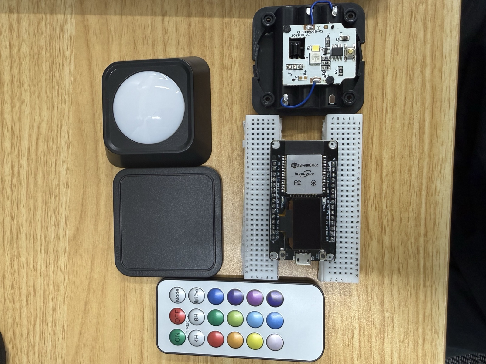
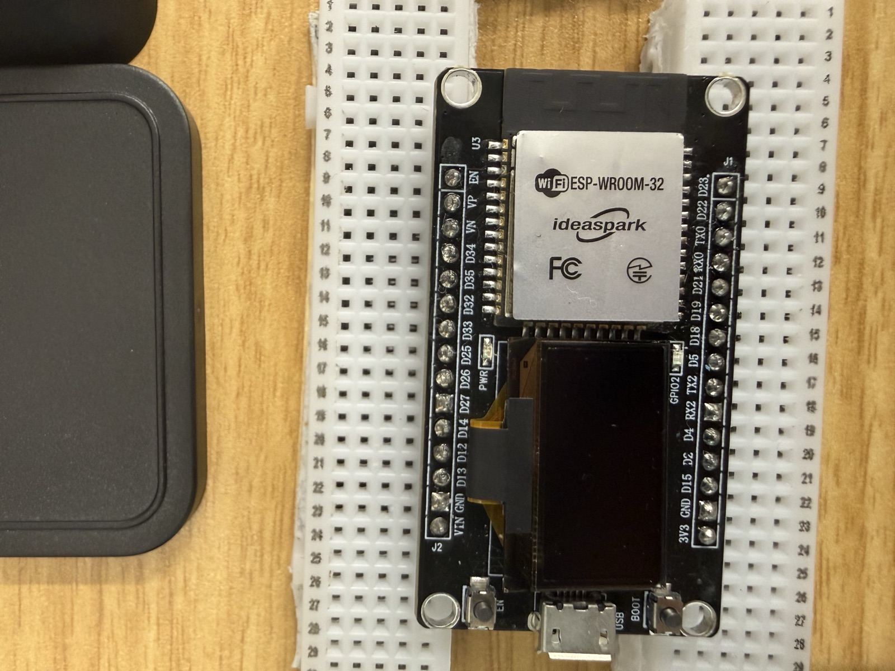
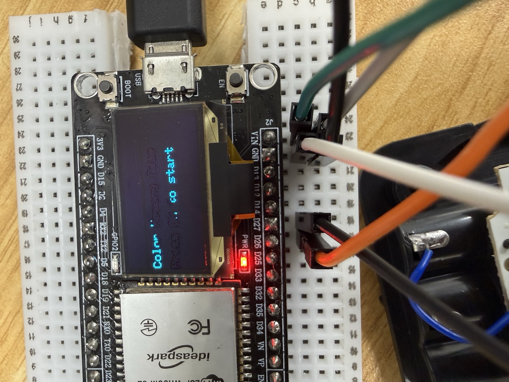
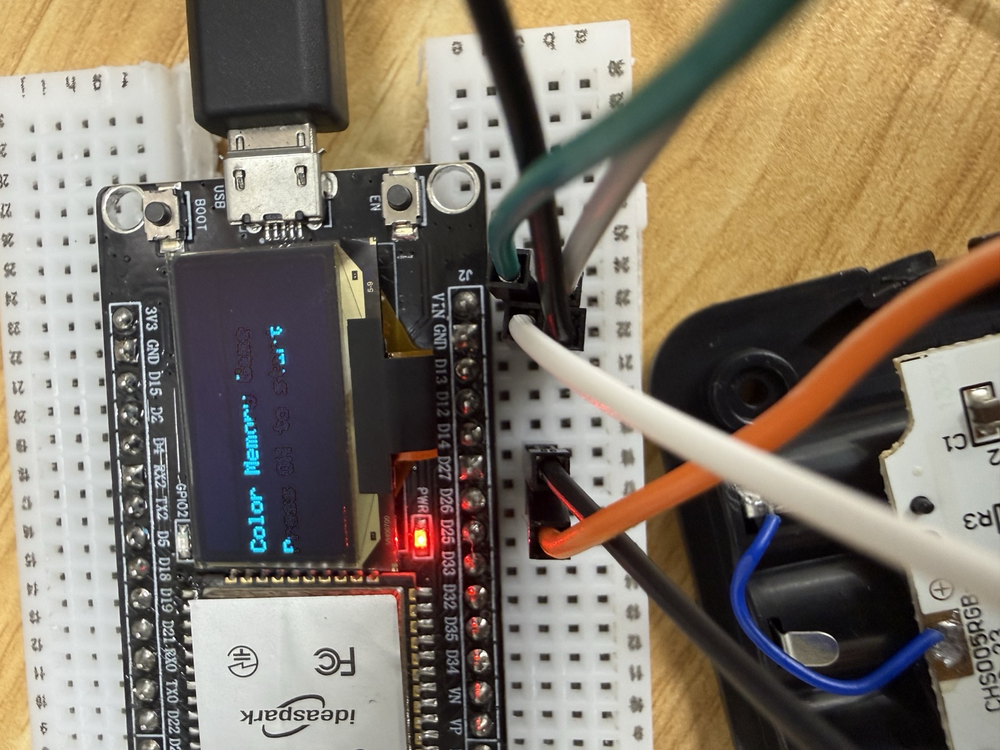

実際に動く様子はこちら
リモコンのボタンを押すと、画面の色とリズムに合わせて判定が出ます。 まずは動いているところを見てください。
▶ リモコンでリズムよく色ボタンを押している様子(音が出ます)
この記事で伝えたいこと
AIの使い方というと、コードを書いてもらう・文章をまとめてもらうといった 「ソフトの中で完結する使い方」に寄りがちです。 でも、AIにハードウェアの知識を教えてもらいながら手を動かすと、 現実の空間で動くものが作れます。
材料は、ほぼ100円ショップ。ESP32というマイコンとジャンパー線・ブレッドボードだけは 別途必要ですが、それでも数千円あればお釣りがきます。 「電子工作はハードルが高そう」と思っている人にこそ、 行動をちょっと変えるだけで、こういう面白い使い方ができるというのを知ってほしくて、 この記事を書きました。いわば「フィジカルAI」的なものづくりのすすめです。
きっかけ:講義で「AIと一緒にものを作る」体験をした
最初のきっかけは大学の講義でした。最終回の課題で、 段ボールで作ったガチャガチャのロック機構を、ESP32とサーボモーターで動かし、 スマホからの仮想通貨の支払いをトリガーにしてロックを開ける、という工作をしたんです。
このとき初めて「AIにやり方を聞きながら、実物のものを作る」という体験をしました。 配線もプログラムも初めてでしたが、分からないことをその場でAIに聞けるので、 想像していたよりずっとスムーズに形になりました。
それが面白くて、「他にも何か面白いことができないかな」と思っていたところで 出会ったのが、100円ショップで売られていたリモコン式のLEDライト(300円)でした。 「これをちょっと改造したら、自分なりの面白いものが作れるんじゃないか?」—— そう思ったのがこのプロジェクトの始まりです。
100円ショップは「電子部品の宝庫」だった
そういう目で100円ショップを歩いてみると、 「電子部品」としては売られていないけれど、中に使える部品が入っていそうなものが たくさんあることに気づきます。たとえば:
- 人感センサーライト → 熱源を感知するセンサーが入っている
- リモコン式のライト → 赤外線を受け取る受信部品が入っている
- 電動消しゴム → 小型モーターが入っている
- モバイルバッテリー → 小さなバッテリーセルが入っていて、自作物の電源に使えそう

なぜ「LEDライト+リモコン」を選んだのか
その中で今回選んだのが、このLEDライトとリモコンのセットです。 「リモコンのボタンを押すとLEDの色が変わる」ということは、 赤外線通信でやりとりしているんだろうな、となんとなく想像できました。
そこから、いろいろなアイデアが浮かびました。
- 赤外線をずっと飛ばしておけば、スパイ映画の赤いレーザーの罠みたいに、人が通ったのを検知できるんじゃないか?
- ボタンがこれだけたくさんあるなら、PCのショートカットキーをいろいろ登録できるんじゃないか?
「これだけ遊べそうなものが300円で買える」——それがこのセットを買った理由です。

開けてみた
さっそく分解してみると、中はこんな感じでした。 小さな基板の上に、赤外線を受け取る受信部品(黒いドーム型のパーツ)と、 色が変わるRGB LEDが載っています。


リモコンには12色ぶんのボタンがある。つまりこの受信部品から信号を取り出せれば、 12個のボタンがあるコントローラーとして使えるということです。 せっかく色がたくさんあるんだから——ということで、 「リモコンで遊ぶリズムゲーム」を作ることに決めました。
使った機材
今回使ったのは以下の機材です。主役のLEDライト以外はAmazonなどで手に入ります (リンクは準備中です。後日、実際に購入したものに差し替えます)。
ESP32 開発ボード(OLEDディスプレイ付き)
今回の頭脳。WiFiとBluetoothを内蔵した小さなコンピュータ(マイコン)で、 プログラムを書き込んで自由に動かせます。今回は小さな画面(OLED)が最初から くっついているタイプを使いました。1,000〜2,000円程度。
Amazonで見る(リンク準備中)PIXELA WiFi USBアダプタ
PCのUSBポートに挿すとWiFi機能を追加できるアダプタ。 今回はESP32とPCを同じWiFiにつなぐために使いました。
Amazonで見る(リンク準備中)100円ショップのLEDライト+リモコン(主役)
今回の主役。リモコン付きで300円。中の赤外線受信部品とリモコンをそのまま使います。


どう作ったか:AIとの共同作業
全体の仕組み
完成形の仕組みはこうなっています。リモコンの赤外線をESP32が受け取り、 「どのボタンが押されたか」をWiFiでPCに送ります。ゲームの画面と判定はPC側で動きます。
ステップ1:AIに「何を準備すればいい?」から聞く
作業はすべて、AI(Claude)に 「こういうことがしたい。何を準備すればいい?」と聞くところから始めました。 必要な部品、配線のつなぎ方、ESP32へのプログラムの書き込み方—— 知識ゼロの状態から、対話しながら一歩ずつ進めていきます。
ステップ2:受信部品をESP32につなぐ
分解した基板の受信部品(VS838)から3本の線を取り出し、ESP32につなぎます。 配線はたったこれだけです。
ステップ3:リモコンの「暗号」を解読する
リモコンのボタンはそれぞれ固有の信号(コード)を赤外線で送っています。 ESP32に受信プログラムを書き込み、シリアルモニタという画面で受信した値を見ながら ボタンを1つずつ押していくと、どのボタンがどのコードかの対応表が作れます。
| ボタン | 受信コード |
|---|---|
| ON | 0x1FE48B7 |
| OFF | 0x1FE58A7 |
| 赤 | 0x1FE20DF |
| 緑 | 0x1FEA05F |
| 青 | 0x1FE609F |
| 黄 | 0x1FE50AF |
こうして12色+ON/OFF/Modeの全ボタンのコードを取得しました。 「何色がどういう文字列で受け取れるか」が分かれば、あとはプログラムで自由に料理できます。
詰まったところと、どう解決したか
もちろん一直線には進みませんでした。印象に残っている「詰まり」を2つ紹介します。
- OLED画面に何も映らない —— AIと相談して「I2Cスキャナ」という診断プログラムを作って流し込み、 画面がどのピンにつながっているかを総当たりで調査。SDA=21 / SCL=22 という 設定だと判明して解決しました。
- 受信部品の型番が分からない —— 基板に型番が書かれておらず、どの足が電源でどの足が信号か分からない。 ネットで同じ製品の分解記事を見つけて型番(VS838)を特定し、 メーカーのデータシート(仕様書)でピン配置を確認してから配線しました。
ステップ4:ゲーム画面はPCに任せる(方針転換)
当初はLEDライト本体を光らせてゲームをする予定でしたが、 LED側の配線の特定がテスターなしでは難しく、いったん保留に。 そこで「ゲーム画面はPCのブラウザに任せて、ESP32はリモコンのボタンをWiFiでPCに送るだけの役に徹する」 という構成に方針転換しました。
ESP32はWiFiを内蔵しているので、こういう転換が気軽にできます。 ゲーム本体はPython(Flask)で書き、ブラウザに16拍のリズムレーンを表示。 リモコンのボタン情報はWiFi経由で届きます。
ゲームの仕様はこんな感じです。
- 全5ステージ。ステージが進むごとに、16拍の中の「色付きビート」が 2 → 4 → 6 → 8 → 10個と増える
- タイミング判定はピッタリ(±0.09秒)で EXCELLENT、少しズレ(±0.22秒)で OK
- 大きくズレたり押しそびれたりするとライフが減る。ライフは3つ、なくなるとゲームオーバー
- 連続で成功するとコンボボーナスでスコアが伸びる


まとめ:AIと一緒なら、現実のものづくりはもっと身近になる
300円のLEDライトが、AIに聞きながら手を動かしただけで、 リモコンをコントローラーにしたリズムゲームになりました。
電子工作の知識はほとんどない状態から始めましたが、 「何を準備する?」「どうつなぐ?」「このエラーは何?」と、 その都度AIと対話しながら進めることで、ここまで来られました。 AIの使い方はソフトの中だけにとどまりません。 ハードとつなげると、現実の空間で動く面白いものが作れます。
100円ショップを「部品の宝庫」として眺めるところから、ぜひ始めてみてください。
ソースコード(ESP32のプログラム・ゲーム本体)はGitHubで公開しています:
github.com/KeitoKuramochi/sensor_infrared